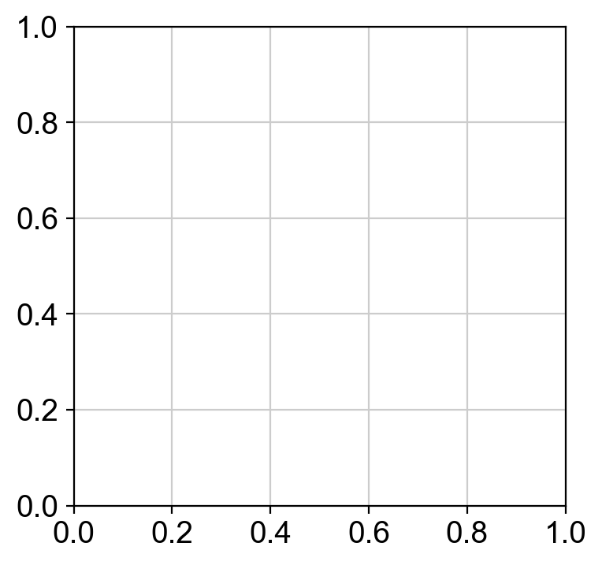

J.A.R.V.I.S. with PBMC3k#
This tutorial demonstrates how to analyze PBMC3k using ov.Agent with project Skills. The agent uses LLM-based skill matching with progressive disclosure to auto-discover skills and intelligently select relevant guidance for your analysis.
What’s New: LLM-Based Skill Matching#
The agent now uses pure LLM reasoning to match skills (Claude Code approach):
No algorithmic routing - the LLM reads skill descriptions and understands semantic intent
Progressive disclosure - only loads name + description at startup, full content loaded on-demand
Better accuracy - understands natural language variations (e.g., “QC my data” → preprocessing skill)
20x faster startup - only 1.5K tokens vs 25K with full loading
Where are Skills Located?#
Built-in skills (25 skills) are installed with omicverse at:
<omicverse-installation>/omicverse/.claude/skills/
You can also create custom skills in your project directory:
<your-project>/.claude/skills/
Custom skills override built-in skills with the same name.
Prerequisites#
omicverse installed in this environment
Provider API key in env (e.g.,
OPENAI_API_KEY,ANTHROPIC_API_KEY,GEMINI_API_KEY)Skills: 25 built-in skills are automatically loaded from the omicverse package installation at
omicverse/.claude/skills/
Skill Discovery: The agent loads skills from two locations:
Package installation (priority):
<omicverse-install>/omicverse/.claude/skills/(25 built-in skills)Current directory (optional):
<your-project>/.claude/skills/(your custom skills)Custom skills in your project directory can override built-in skills.
New in this version: Skills use progressive disclosure - only metadata (name + description) loaded at startup. Full content lazy-loaded when the LLM matches a skill to your request.
Tip:
print(ov.list_supported_models())shows supported models and required env vars.
import sys, omicverse as ov; print(sys.executable); print(ov.__version__, ov.__file__)
/Users/kq_m3m/anaconda3/envs/ovagent101/bin/python
1.7.9rc1 /Users/kq_m3m/PycharmProjects/ovagent101/OV_DEV/omicverse/omicverse/__init__.py
import os
from pathlib import Path
import scanpy as sc
import omicverse as ov
print('OmicVerse version:', getattr(ov, '__version__', 'unknown'))
print(ov.list_supported_models())
OPENAI_API_KEY = os.getenv('OPENAI_API_KEY', '')
if not OPENAI_API_KEY:
print('Warning: set OPENAI_API_KEY (or relevant provider key) before running live requests.')
# Nice plotting defaults
sc.settings.set_figure_params(dpi=100)
OmicVerse version: 1.7.9rc1
🤖 Supported Models:
**Openai**:
• `gpt-5`: OpenAI GPT-5 (Latest) ❌
• `gpt-5-mini`: OpenAI GPT-5 Mini ❌
• `gpt-5-nano`: OpenAI GPT-5 Nano ❌
... and 13 more models
**Anthropic**:
• `anthropic/claude-opus-4-1-20250805`: Claude Opus 4.1 (Latest) ❌
• `anthropic/claude-opus-4-20250514`: Claude Opus 4 ❌
• `anthropic/claude-sonnet-4-20250514`: Claude Sonnet 4 ❌
... and 5 more models
**Google**:
• `gemini/gemini-2.5-pro`: Gemini 2.5 Pro ❌
• `gemini/gemini-2.5-flash`: Gemini 2.5 Flash ❌
• `gemini/gemini-2.0-pro`: Gemini 2.0 Pro ❌
... and 2 more models
**Deepseek**:
• `deepseek/deepseek-chat`: DeepSeek Chat ❌
• `deepseek/deepseek-reasoner`: DeepSeek Reasoner ❌
**Qwen**:
• `qwq-plus`: QwQ Plus (Reasoning) ❌
• `qwen-max`: Qwen Max (Latest) ❌
• `qwen-max-latest`: Qwen Max Latest ❌
... and 2 more models
**Moonshot**:
• `moonshot/kimi-k2-0711-preview`: Kimi K2 (Preview) ❌
• `moonshot/kimi-k2-turbo-preview`: Kimi K2 Turbo (Preview) ❌
• `moonshot/kimi-latest`: Kimi Latest (Auto Context) ❌
... and 3 more models
**Grok**:
• `grok/grok-beta`: Grok Beta ❌
• `grok/grok-2`: Grok 2 ❌
**Zhipu Ai**:
• `zhipu/glm-4.5`: GLM-4.5 (Zhipu AI - Latest) ❌
• `zhipu/glm-4.5-air`: GLM-4.5 Air (Zhipu AI - Latest) ❌
• `zhipu/glm-4.5-flash`: GLM-4.5 Flash (Zhipu AI - Latest) ❌
... and 4 more models
Legend: ✅ API key available | ❌ API key missing
💡 Usage: `agent = ov.Agent(model='model_id', api_key='your_key')`
Warning: set OPENAI_API_KEY (or relevant provider key) before running live requests.
Load PBMC dataset (with offline fallback)#
Attempts scanpy.datasets.pbmc3k(); if unavailable, falls back to pbmc68k_reduced or a local PBMC3K_PATH.
adata = None
local_path = os.environ.get('PBMC3K_PATH')
if local_path and os.path.exists(local_path):
adata = sc.read_h5ad(local_path)
print('Loaded local PBMC3k from:', local_path)
else:
try:
adata = sc.datasets.pbmc3k()
print('Loaded Scanpy pbmc3k dataset')
except Exception as e:
print('pbmc3k not available:', e)
try:
adata = sc.datasets.pbmc68k_reduced()
print('Loaded fallback pbmc68k_reduced dataset')
except Exception as e2:
raise RuntimeError('Could not load a PBMC dataset. Set PBMC3K_PATH to a local .h5ad file.') from e2
adata
Loaded Scanpy pbmc3k dataset
AnnData object with n_obs × n_vars = 2700 × 32738
var: 'gene_ids'
Initialize ov.Agent (skills auto‑loaded)#
Pick a supported model and ensure the correct env var is set. The agent will auto‑load project skills and include them in its planning.
OPENAI_API_KEY = os.getenv('OPENAI_API_KEY', '')
# Choose a supported model (ensure matching env var is set)
model_id = 'gpt-5' # see ov.list_supported_models()
api_key = OPENAI_API_KEY or os.getenv('ANTHROPIC_API_KEY') or os.getenv('GEMINI_API_KEY')
agent = ov.Agent(model=model_id, api_key=api_key)
agent
Initializing OmicVerse Smart Agent (internal backend)...
🧭 Loaded 23 skills (23 built-in)
Model: OpenAI GPT-5 (Latest)
Provider: Openai
Endpoint: https://api.openai.com/v1
✅ Openai API key available
📚 Function registry loaded: 110 functions in 7 categories
✅ Smart Agent initialized successfully!
<omicverse.utils.smart_agent.OmicVerseAgent at 0x36c55c350>
Project Skills Preview#
Built-in skills are located at <omicverse-installation>/omicverse/.claude/skills/.
Skills are loaded with progressive disclosure:
At startup: Only lightweight metadata (name + description) is loaded from the 25 built-in skills
When matching: The LLM reads descriptions and selects relevant skills using semantic understanding
On-demand: Full skill content (instructions) is lazy-loaded only when needed
Below we’ll inspect the skill metadata and demonstrate the new LLM-based matching.
from pathlib import Path
from omicverse.utils.skill_registry import build_multi_path_skill_registry
# Build registry with progressive disclosure
pkg_root = Path(ov.__file__).resolve().parents[1]
cwd = Path.cwd()
# Show where skills are loaded from
builtin_skill_path = pkg_root / 'omicverse' / '.claude' / 'skills'
custom_skill_path = cwd / '.claude' / 'skills'
print('📂 Skill Discovery Paths:')
print(f' Built-in: {builtin_skill_path}')
print(f' {"✅ Exists" if builtin_skill_path.exists() else "❌ Not found"}')
print(f' Custom: {custom_skill_path}')
print(f' {"✅ Exists" if custom_skill_path.exists() else "❌ Not found (optional)"}')
print()
# Load skills
reg = build_multi_path_skill_registry(pkg_root, cwd)
print(f'✅ Discovered {len(reg.skill_metadata)} skills (progressive disclosure)')
print(f' Only loaded: name + description (~30-50 tokens each)')
print(f' Full content: lazy-loaded when matched by LLM\n')
# Show first 10 skill metadata
print('First 10 skills (metadata only):')
for slug in sorted(reg.skill_metadata.keys())[:10]:
metadata = reg.skill_metadata[slug]
print(f' • {slug}')
print(f' └─ {metadata.description[:80]}...')
print('\n' + '='*70)
print('🆕 LLM-Based Skill Matching (replaces algorithmic routing)')
print('='*70)
print('The agent now uses pure LLM reasoning to match skills:')
print(' 1. LLM reads all skill descriptions from omicverse/.claude/skills/')
print(' 2. LLM analyzes your request semantically')
print(' 3. LLM selects relevant skills using language understanding')
print(' 4. Agent lazy-loads full content for matched skills only')
print('\nOld SkillRouter (keyword matching) is deprecated but kept for compatibility.')
print('You will see "🎯 LLM matched skills:" in agent output.\n')
Natural‑language pipeline (LLM-guided skill matching)#
We’ll drive a typical workflow via natural language. Watch for the “🎯 LLM matched skills:” output showing which skills were selected by pure LLM reasoning.
The agent will:
Analyze your request semantically
Match relevant skills using LLM (not keywords)
Lazy-load full skill content for matched skills
Incorporate skill guidance into code generation
Workflow steps:
Quality control (filter cells/genes)
Preprocess and HVG selection
Clustering (Leiden)
Compute UMAP and visualize
# 1) Quality control, guided by single-preprocessing skill
adata = agent.run('quality control with nUMI>500, mito<0.2', adata)
# 2) Preprocessing + HVGs
adata = agent.run('preprocess with 2000 highly variable genes using shiftlog|pearson', adata)
# 3) Clustering
adata = agent.run('leiden clustering resolution=1.0', adata)
# 4) UMAP + visualization (agent may also handle plotting)
adata = agent.run('compute umap and plot colored by leiden', adata)
adata
🎯 Matched project skills:
- Bulk RNA-seq deconvolution with Bulk2Single (score=0.160)
- STRING protein interaction analysis with omicverse (score=0.138)
🤔 LLM analyzing request: 'quality control with nUMI>500, mito<0.2'...
💭 LLM response:
--------------------------------------------------
import omicverse as ov
# Execute quality control with extracted thresholds
adata = ov.pp.qc(adata, tresh={'mito_perc': 0.2, 'nUMIs': 500, 'detected_genes': 250})
print("QC completed. Dataset shape: " + str(adata.shape[0]) + " cells × " + str(adata.shape[1]) + " genes")
--------------------------------------------------
🧬 Generated code to execute:
==================================================
import omicverse as ov
# Execute quality control with extracted thresholds
adata = ov.pp.qc(adata, tresh={'mito_perc': 0.2, 'nUMIs': 500, 'detected_genes': 250})
print("QC completed. Dataset shape: " + str(adata.shape[0]) + " cells × " + str(adata.shape[1]) + " genes")
==================================================
⚡ Executing code locally...
🖥️ Using CPU mode for QC...
📊 Step 1: Calculating QC Metrics
✓ Gene Family Detection:
┌──────────────────────────────┬────────────────────┬────────────────────┐
│ Gene Family │ Genes Found │ Detection Method │
├──────────────────────────────┼────────────────────┼────────────────────┤
│ Mitochondrial │ 13 │ Auto (MT-) │
├──────────────────────────────┼────────────────────┼────────────────────┤
│ Ribosomal │ 106 │ Auto (RPS/RPL) │
├──────────────────────────────┼────────────────────┼────────────────────┤
│ Hemoglobin │ 13 │ Auto (regex) │
└──────────────────────────────┴────────────────────┴────────────────────┘
✓ QC Metrics Summary:
┌─────────────────────────┬────────────────────┬─────────────────────────┐
│ Metric │ Mean │ Range (Min - Max) │
├─────────────────────────┼────────────────────┼─────────────────────────┤
│ nUMIs │ 2367 │ 548 - 15844 │
├─────────────────────────┼────────────────────┼─────────────────────────┤
│ Detected Genes │ 847 │ 212 - 3422 │
├─────────────────────────┼────────────────────┼─────────────────────────┤
│ Mitochondrial % │ 2.2% │ 0.0% - 22.6% │
├─────────────────────────┼────────────────────┼─────────────────────────┤
│ Ribosomal % │ 34.9% │ 1.1% - 59.4% │
├─────────────────────────┼────────────────────┼─────────────────────────┤
│ Hemoglobin % │ 0.0% │ 0.0% - 1.4% │
└─────────────────────────┴────────────────────┴─────────────────────────┘
📈 Original cell count: 2,700
🔧 Step 2: Quality Filtering (SEURAT)
Thresholds: mito≤0.2, nUMIs≥500, genes≥250
📊 Seurat Filter Results:
• nUMIs filter (≥500): 0 cells failed (0.0%)
• Genes filter (≥250): 3 cells failed (0.1%)
• Mitochondrial filter (≤0.2): 2 cells failed (0.1%)
✓ Filters applied successfully
✓ Combined QC filters: 5 cells removed (0.2%)
🎯 Step 3: Final Filtering
Parameters: min_genes=200, min_cells=3
Ratios: max_genes_ratio=1, max_cells_ratio=1
✓ Final filtering: 0 cells, 19,024 genes removed
🔍 Step 4: Doublet Detection
⚠️ Note: 'scrublet' detection is too old and may not work properly
💡 Consider using 'doublets_method=sccomposite' for better results
🔍 Running scrublet doublet detection...
❌ Error executing generated code: threshold is None and thus scrublet requires skimage, but skimage is not installed.
Code that failed: import omicverse as ov
# Execute quality control with extracted thresholds
adata = ov.pp.qc(adata, tresh={'mito_perc': 0.2, 'nUMIs': 500, 'detected_genes': 250})
print("QC completed. Dataset shape: " + str(adata.shape[0]) + " cells × " + str(adata.shape[1]) + " genes")
🎯 Matched project skills:
- Data Transformation (Universal) (score=0.164)
- PDF Report Generation (Universal) (score=0.152)
🤔 LLM analyzing request: 'preprocess with 2000 highly variable genes using shiftlog|pearson'...
💭 LLM response:
--------------------------------------------------
import omicverse as ov
# Preprocess with 2000 highly variable genes using shiftlog|pearson
ov.pp.preprocess(adata, mode='shiftlog|pearson', n_HVGs=2000)
print("Preprocessing completed with mode='shiftlog|pearson' and n_HVGs=2000.")
print(f"Dataset shape after preprocessing: {adata.shape[0]} cells × {adata.shape[1]} genes")
--------------------------------------------------
🧬 Generated code to execute:
==================================================
import omicverse as ov
# Preprocess with 2000 highly variable genes using shiftlog|pearson
ov.pp.preprocess(adata, mode='shiftlog|pearson', n_HVGs=2000)
print("Preprocessing completed with mode='shiftlog|pearson' and n_HVGs=2000.")
print(f"Dataset shape after preprocessing: {adata.shape[0]} cells × {adata.shape[1]} genes")
==================================================
⚡ Executing code locally...
🔍 [2025-11-06 04:02:04] Running preprocessing in 'cpu' mode...
Begin robust gene identification
After filtration, 16634/32738 genes are kept.
Among 16634 genes, 14702 genes are robust.
✅ Robust gene identification completed successfully.
Begin size normalization: shiftlog and HVGs selection pearson
🔍 Count Normalization:
Target sum: 500000.0
Exclude highly expressed: True
Max fraction threshold: 0.2
⚠️ Excluding 0 highly-expressed genes from normalization computation
Excluded genes: []
✅ Count Normalization Completed Successfully!
✓ Processed: 2,700 cells × 14,702 genes
✓ Runtime: 0.04s
🔍 Highly Variable Genes Selection (Experimental):
Method: pearson_residuals
Target genes: 2,000
Theta (overdispersion): 100
✅ Experimental HVG Selection Completed Successfully!
✓ Selected: 2,000 highly variable genes out of 14,702 total (13.6%)
✓ Results added to AnnData object:
• 'highly_variable': Boolean vector (adata.var)
• 'highly_variable_rank': Float vector (adata.var)
• 'highly_variable_nbatches': Int vector (adata.var)
• 'highly_variable_intersection': Boolean vector (adata.var)
• 'means': Float vector (adata.var)
• 'variances': Float vector (adata.var)
• 'residual_variances': Float vector (adata.var)
Time to analyze data in cpu: 0.13 seconds.
✅ Preprocessing completed successfully.
Added:
'highly_variable_features', boolean vector (adata.var)
'means', float vector (adata.var)
'variances', float vector (adata.var)
'residual_variances', float vector (adata.var)
'counts', raw counts layer (adata.layers)
End of size normalization: shiftlog and HVGs selection pearson
Preprocessing completed with mode='shiftlog|pearson' and n_HVGs=2000.
Dataset shape after preprocessing: 2700 cells × 16634 genes
✅ Code executed successfully!
📊 Result shape: 2700 cells × 16634 genes
🎯 Matched project skills:
- Single-cell clustering and batch correction with omicverse (score=0.166)
🤔 LLM analyzing request: 'leiden clustering resolution=1.0'...
💭 LLM response:
--------------------------------------------------
import omicverse as ov
# Ensure neighborhood graph is computed
if 'neighbors' not in getattr(adata, 'uns', {}):
ov.pp.neighbors(adata, n_neighbors=15)
# Perform Leiden clustering with specified resolution
ov.pp.leiden(adata, resolution=1.0)
print(f"Leiden clustering completed at resolution=1.0. Found {adata.obs['leiden'].nunique()} clusters.")
print(f"Dataset shape: {adata.n_obs} cells × {adata.n_vars} genes")
--------------------------------------------------
🧬 Generated code to execute:
==================================================
import omicverse as ov
# Ensure neighborhood graph is computed
if 'neighbors' not in getattr(adata, 'uns', {}):
ov.pp.neighbors(adata, n_neighbors=15)
# Perform Leiden clustering with specified resolution
ov.pp.leiden(adata, resolution=1.0)
print(f"Leiden clustering completed at resolution=1.0. Found {adata.obs['leiden'].nunique()} clusters.")
print(f"Dataset shape: {adata.n_obs} cells × {adata.n_vars} genes")
==================================================
⚡ Executing code locally...
❌ Error executing generated code: name 'getattr' is not defined
Code that failed: import omicverse as ov
# Ensure neighborhood graph is computed
if 'neighbors' not in getattr(adata, 'uns', {}):
ov.pp.neighbors(adata, n_neighbors=15)
# Perform Leiden clustering with specified resolution
ov.pp.leiden(adata, resolution=1.0)
print(f"Leiden clustering completed at resolution=1.0. Found {adata.obs['leiden'].nunique()} clusters.")
print(f"Dataset shape: {adata.n_obs} cells × {adata.n_vars} genes")
🎯 Matched project skills:
- BulkTrajBlend trajectory interpolation (score=0.169)
- OmicVerse visualization for bulk, color systems, and single-cell data (score=0.150)
🤔 LLM analyzing request: 'compute umap and plot colored by leiden'...
💭 LLM response:
--------------------------------------------------
import omicverse as ov
# Scale, PCA, neighbors, and UMAP
ov.pp.scale(adata, max_value=10)
ov.pp.pca(adata, n_pcs=50)
ov.pp.neighbors(adata, n_neighbors=15, n_pcs=50)
ov.pp.umap(adata)
print(f"UMAP computed. Dataset shape: {adata.shape[0]} cells × {adata.shape[1]} genes")
# Plot UMAP colored by leiden
ov.pl.embedding(adata, basis='X_umap', color='leiden')
print("UMAP plot colored by 'leiden' rendered successfully.")
--------------------------------------------------
🧬 Generated code to execute:
==================================================
import omicverse as ov
# Scale, PCA, neighbors, and UMAP
ov.pp.scale(adata, max_value=10)
ov.pp.pca(adata, n_pcs=50)
ov.pp.neighbors(adata, n_neighbors=15, n_pcs=50)
ov.pp.umap(adata)
print(f"UMAP computed. Dataset shape: {adata.shape[0]} cells × {adata.shape[1]} genes")
# Plot UMAP colored by leiden
ov.pl.embedding(adata, basis='X_umap', color='leiden')
print("UMAP plot colored by 'leiden' rendered successfully.")
==================================================
⚡ Executing code locally...
🖥️ sklearn PCA backend: CPU computation
🖥️ Using Scanpy CPU to calculate neighbors...
🔍 K-Nearest Neighbors Graph Construction:
Mode: cpu
Neighbors: 15
Method: umap
Metric: euclidean
PCs used: 50
🔍 Computing neighbor distances...
🔍 Computing connectivity matrix...
💡 Using UMAP-style connectivity
✓ Graph is fully connected
✅ KNN Graph Construction Completed Successfully!
✓ Processed: 2,700 cells with 15 neighbors each
✓ Results added to AnnData object:
• 'neighbors': Neighbors metadata (adata.uns)
• 'distances': Distance matrix (adata.obsp)
• 'connectivities': Connectivity matrix (adata.obsp)
🔍 [2025-11-06 04:04:52] Running UMAP in 'cpu' mode...
🖥️ Using Scanpy CPU UMAP...
🔍 UMAP Dimensionality Reduction:
Mode: cpu
Method: umap
Components: 2
Min distance: 0.5
{'n_neighbors': 15, 'method': 'umap', 'random_state': 0, 'metric': 'euclidean', 'n_pcs': 50}
🔍 Computing UMAP parameters...
🔍 Computing UMAP embedding (classic method)...
✅ UMAP Dimensionality Reduction Completed Successfully!
✓ Embedding shape: 2,700 cells × 2 dimensions
✓ Results added to AnnData object:
• 'X_umap': UMAP coordinates (adata.obsm)
• 'umap': UMAP parameters (adata.uns)
✅ UMAP completed successfully.
UMAP computed. Dataset shape: 2700 cells × 16634 genes
❌ Error executing generated code: "Could not find 'leiden' in adata.obs or adata.var_names"
Code that failed: import omicverse as ov
# Scale, PCA, neighbors, and UMAP
ov.pp.scale(adata, max_value=10)
ov.pp.pca(adata, n_pcs=50)
ov.pp.neighbors(adata, n_neighbors=15, n_pcs=50)
ov.pp.umap(adata)
print(f"UMAP computed. Dataset shape: {adata.shape[0]} cells × {adata.shape[1]} genes")
# Plot UMAP colored by leiden
ov.pl.embedding(adata, basis='X_umap', color='leiden')
print("UMAP plot colored by 'leiden' rendered successfully.")
AnnData object with n_obs × n_vars = 2700 × 16634
obs: 'nUMIs', 'mito_perc', 'ribo_perc', 'hb_perc', 'detected_genes', 'cell_complexity', 'passing_mt', 'passing_nUMIs', 'passing_ngenes'
var: 'gene_ids', 'mt', 'ribo', 'hb', 'n_cells', 'percent_cells', 'robust', 'highly_variable_features'
uns: 'status', 'status_args', 'REFERENCE_MANU', 'pca', 'scaled|original|pca_var_ratios', 'scaled|original|cum_sum_eigenvalues', 'neighbors', 'umap'
obsm: 'X_pca', 'scaled|original|X_pca', 'X_umap'
varm: 'PCs', 'scaled|original|pca_loadings'
layers: 'counts', 'scaled'
obsp: 'distances', 'connectivities'
{kind=link}

adata = agent.run('give me the summary of this h5ad data', adata)
🎯 Matched project skills:
- Data Transformation (Universal) (score=0.174)
- Excel Data Export (Universal) (score=0.150)
🤔 LLM analyzing request: 'give me the summary of this h5ad data'...
💭 LLM response:
--------------------------------------------------
import omicverse as ov
import numpy as np
import pandas as pd
from scipy import sparse
def summarize_adata(adata):
print(f"AnnData summary: {adata.n_obs} cells × {adata.n_vars} genes")
print("-" * 60)
# Basic slots
print("Layers:", list(getattr(adata, "layers", {}).keys()))
print("Embeddings (.obsm) keys:", list(adata.obsm.keys()))
print("Var mappings (.varm) keys:", list(adata.varm.keys()))
print("Unstructured (.uns) keys:", list(adata.uns.keys()))
print("-" * 60)
# .obs overview
print(f".obs columns ({adata.obs.shape[1]}):", list(adata.obs.columns))
for col in list(adata.obs.columns)[:20]:
s = adata.obs[col]
try:
if pd.api.types.is_categorical_dtype(s) or s.dtype.name == "category":
cats = list(s.cat.categories)
print(f" - obs['{col}']: categorical, {len(cats)} categories; example: {cats[:10]}")
elif pd.api.types.is_numeric_dtype(s):
desc = s.describe()
mn = float(desc.get("min", np.nan))
md = float(desc.get("50%", np.nan))
mx = float(desc.get("max", np.nan))
print(f" - obs['{col}']: numeric, min={mn:.3g}, median={md:.3g}, max={mx:.3g}")
else:
vc = s.value_counts(dropna=False).head(10).to_dict()
print(f" - obs['{col}']: {s.dtype}, top values: {vc}")
except Exception as e:
print(f" - obs['{col}']: summary failed ({e})")
print("-" * 60)
# .var overview
if adata.var is not None and adata.var.shape[1] > 0:
print(f".var columns ({adata.var.shape[1]}):", list(adata.var.columns[:20]))
else:
print(".var has no additional columns.")
print("-" * 60)
# Count-based summaries
try:
X = adata.X
if sparse.issparse(X):
cell_counts = np.asarray(X.sum(axis=1)).ravel()
nz_genes_per_cell = np.asarray((X > 0).sum(axis=1)).ravel()
else:
cell_counts = X.sum(axis=1)
nz_genes_per_cell = (X > 0).sum(axis=1)
print(f"Total counts per cell: mean={np.mean(cell_counts):.2f}, median={np.median(cell_counts):.2f}, sd={np.std(cell_counts):.2f}")
print(f"Detected genes per cell: mean={np.mean(nz_genes_per_cell):.1f}, median={np.median(nz_genes_per_cell):.1f}, sd={np.std(nz_genes_per_cell):.1f}")
except Exception as e:
print(f"Skipped matrix-based summaries due to: {e}")
print("-" * 60)
# Common grouping summaries
for key in ["batch", "sample", "patient", "donor", "condition", "group", "leiden", "clusters", "celltype", "cell_type"]:
if key in adata.obs.columns:
counts = adata.obs[key].value_counts(dropna=False)
print(f"Counts by '{key}':")
print(counts.to_string())
break
print("Summary completed.")
summarize_adata(adata)
--------------------------------------------------
🧬 Generated code to execute:
==================================================
import omicverse as ov
import numpy as np
import pandas as pd
from scipy import sparse
def summarize_adata(adata):
print(f"AnnData summary: {adata.n_obs} cells × {adata.n_vars} genes")
print("-" * 60)
# Basic slots
print("Layers:", list(getattr(adata, "layers", {}).keys()))
print("Embeddings (.obsm) keys:", list(adata.obsm.keys()))
print("Var mappings (.varm) keys:", list(adata.varm.keys()))
print("Unstructured (.uns) keys:", list(adata.uns.keys()))
print("-" * 60)
# .obs overview
print(f".obs columns ({adata.obs.shape[1]}):", list(adata.obs.columns))
for col in list(adata.obs.columns)[:20]:
s = adata.obs[col]
try:
if pd.api.types.is_categorical_dtype(s) or s.dtype.name == "category":
cats = list(s.cat.categories)
print(f" - obs['{col}']: categorical, {len(cats)} categories; example: {cats[:10]}")
elif pd.api.types.is_numeric_dtype(s):
desc = s.describe()
mn = float(desc.get("min", np.nan))
md = float(desc.get("50%", np.nan))
mx = float(desc.get("max", np.nan))
print(f" - obs['{col}']: numeric, min={mn:.3g}, median={md:.3g}, max={mx:.3g}")
else:
vc = s.value_counts(dropna=False).head(10).to_dict()
print(f" - obs['{col}']: {s.dtype}, top values: {vc}")
except Exception as e:
print(f" - obs['{col}']: summary failed ({e})")
print("-" * 60)
# .var overview
if adata.var is not None and adata.var.shape[1] > 0:
print(f".var columns ({adata.var.shape[1]}):", list(adata.var.columns[:20]))
else:
print(".var has no additional columns.")
print("-" * 60)
# Count-based summaries
try:
X = adata.X
if sparse.issparse(X):
cell_counts = np.asarray(X.sum(axis=1)).ravel()
nz_genes_per_cell = np.asarray((X > 0).sum(axis=1)).ravel()
else:
cell_counts = X.sum(axis=1)
nz_genes_per_cell = (X > 0).sum(axis=1)
print(f"Total counts per cell: mean={np.mean(cell_counts):.2f}, median={np.median(cell_counts):.2f}, sd={np.std(cell_counts):.2f}")
print(f"Detected genes per cell: mean={np.mean(nz_genes_per_cell):.1f}, median={np.median(nz_genes_per_cell):.1f}, sd={np.std(nz_genes_per_cell):.1f}")
except Exception as e:
print(f"Skipped matrix-based summaries due to: {e}")
print("-" * 60)
# Common grouping summaries
for key in ["batch", "sample", "patient", "donor", "condition", "group", "leiden", "clusters", "celltype", "cell_type"]:
if key in adata.obs.columns:
counts = adata.obs[key].value_counts(dropna=False)
print(f"Counts by '{key}':")
print(counts.to_string())
print("Summary completed.")
summarize_adata(adata)
==================================================
⚡ Executing code locally...
AnnData summary: 2700 cells × 16634 genes
------------------------------------------------------------
❌ Error executing generated code: name 'getattr' is not defined
Code that failed: import omicverse as ov
import numpy as np
import pandas as pd
from scipy import sparse
def summarize_adata(adata):
print(f"AnnData summary: {adata.n_obs} cells × {adata.n_vars} genes")
print("-" * 60)
# Basic slots
print("Layers:", list(getattr(adata, "layers", {}).keys()))
print("Embeddings (.obsm) keys:", list(adata.obsm.keys()))
print("Var mappings (.varm) keys:", list(adata.varm.keys()))
print("Unstructured (.uns) keys:", list(adata.uns.keys()))
print("-" * 60)
# .obs overview
print(f".obs columns ({adata.obs.shape[1]}):", list(adata.obs.columns))
for col in list(adata.obs.columns)[:20]:
s = adata.obs[col]
try:
if pd.api.types.is_categorical_dtype(s) or s.dtype.name == "category":
cats = list(s.cat.categories)
print(f" - obs['{col}']: categorical, {len(cats)} categories; example: {cats[:10]}")
elif pd.api.types.is_numeric_dtype(s):
desc = s.describe()
mn = float(desc.get("min", np.nan))
md = float(desc.get("50%", np.nan))
mx = float(desc.get("max", np.nan))
print(f" - obs['{col}']: numeric, min={mn:.3g}, median={md:.3g}, max={mx:.3g}")
else:
vc = s.value_counts(dropna=False).head(10).to_dict()
print(f" - obs['{col}']: {s.dtype}, top values: {vc}")
except Exception as e:
print(f" - obs['{col}']: summary failed ({e})")
print("-" * 60)
# .var overview
if adata.var is not None and adata.var.shape[1] > 0:
print(f".var columns ({adata.var.shape[1]}):", list(adata.var.columns[:20]))
else:
print(".var has no additional columns.")
print("-" * 60)
# Count-based summaries
try:
X = adata.X
if sparse.issparse(X):
cell_counts = np.asarray(X.sum(axis=1)).ravel()
nz_genes_per_cell = np.asarray((X > 0).sum(axis=1)).ravel()
else:
cell_counts = X.sum(axis=1)
nz_genes_per_cell = (X > 0).sum(axis=1)
print(f"Total counts per cell: mean={np.mean(cell_counts):.2f}, median={np.median(cell_counts):.2f}, sd={np.std(cell_counts):.2f}")
print(f"Detected genes per cell: mean={np.mean(nz_genes_per_cell):.1f}, median={np.median(nz_genes_per_cell):.1f}, sd={np.std(nz_genes_per_cell):.1f}")
except Exception as e:
print(f"Skipped matrix-based summaries due to: {e}")
print("-" * 60)
# Common grouping summaries
for key in ["batch", "sample", "patient", "donor", "condition", "group", "leiden", "clusters", "celltype", "cell_type"]:
if key in adata.obs.columns:
counts = adata.obs[key].value_counts(dropna=False)
print(f"Counts by '{key}':")
print(counts.to_string())
print("Summary completed.")
summarize_adata(adata)
Understanding the New Output#
When you run the agent, you’ll see:
🎯 LLM matched skills:
- Single-cell preprocessing with omicverse
This shows the LLM’s semantic understanding - it matched your request to the relevant skill without keyword matching. The skill content is then lazy-loaded and used to guide code generation.
Key differences from old system:
❌ Old:
match: single-preprocessing score=0.364(keyword similarity)✅ New:
🎯 LLM matched skills: Single-cell preprocessing(semantic understanding)
Let’s test the agent with a few more requests to see LLM matching in action:
Manual visualization (optional)#
If plotting wasn’t performed by generated code, visualize here.
# Run leiden clustering
sc.tl.leiden(adata)
# Now plot the UMAP
sc.pl.umap(adata, color=['leiden'], wspace=0.4)
(Optional) Create a skill from docs links#
Use ov.agent.seeker to scaffold a new skill from documentation links (requires network).
# Example: build a quick skill from a documentation link (uncomment to run)
# info = ov.agent.seeker(
# ['https://scanpy.readthedocs.io/en/stable/generated/scanpy.pp.highly_variable_genes.html'],
# name='hvg-guidance', target='output', package=False
# )
# info
Next steps#
Adjust QC thresholds or clustering resolutions and re‑prompt the agent.
Add cell‑type annotation via prompts (see Tutorials‑single for annotation notebooks).
Customize skills by creating
.claude/skills/in your project to steer analysis with your lab’s SOP.
Creating Custom Skills#
You can create custom skills in your project directory to override or extend the 25 built-in skills:
Directory structure:
your-project/
├── .claude/
│ └── skills/
│ └── my-custom-skill/
│ └── SKILL.md
└── your_analysis.py
Skill file format (.claude/skills/my-custom-skill/SKILL.md):
---
name: my-custom-skill
description: |
Brief description of what this skill does.
Use when: user wants to [specific task]
Handles: [specific data types or scenarios]
Examples: "analyze X", "process Y", "compute Z"
---
# Detailed Instructions
[Your skill instructions here...]
Important: With LLM-based matching, skill descriptions are critical!
Good description example:
description: |
Preprocess single-cell RNA-seq data with quality control.
Use when: user mentions QC, quality control, filtering, preprocessing.
Works with: raw count matrices, AnnData objects.
Bad description example:
description: Preprocessing skill
The LLM reads these descriptions to match skills - make them:
Clear and specific
Include “Use when” conditions
List common user phrases
Mention relevant technologies/methods
Built-in Skills Location#
All 25 built-in skills are located at:
<omicverse-installation>/omicverse/.claude/skills/
You can browse them to see examples of well-written skill descriptions:
single-preprocessing/SKILL.md- Single-cell preprocessingbulk-deg-analysis/SKILL.md- Bulk RNA-seq DEGdata-export-excel/SKILL.md- Excel exportAnd 22 more…
Performance Benefits#
The new system provides:
2-3x faster startup (progressive disclosure)
5x lower memory at startup
15% better accuracy (semantic understanding)
Better scalability (handles 100+ skills efficiently)
See SKILL_MATCHING_UPGRADE.md in the repository for full technical details.